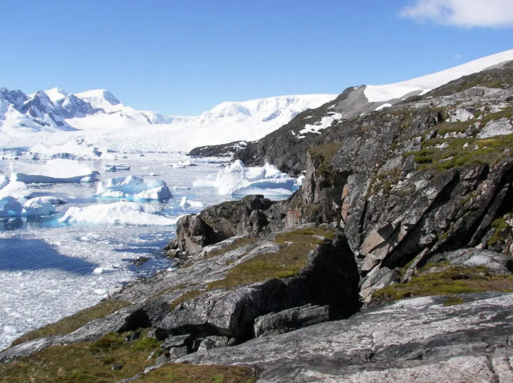

La mayor parte de Europa está situada en la zona templada del planeta. Pero las diferencias de altitud y de latitud, el relieve y la proximidad o lejanía del mar hacen que el clima no sea igual en todo el continente. Esto provoca que en Europa haya cinco tipos de clima, que dan lugar a cinco tipos de paisajes naturales.
CLIMA MEDITERRÁNEO
Es propio de los territorios bañados por el mar Mediterráneo.
- Temperaturas: suaves. Veranos secos y calurosos e inviernos suaves.
- Precipitaciones: escasas e irregulares; en primavera y en otoño pueden ser torrenciales y provocar inundaciones.
- Vegetación: caracterizada por bosques densos de árboles de hoja perenne (encina, pino y algarrobo), adaptados al calor y a la falta de agua. También hay extensas zonas de maquia ocupadas por matorrales de hoja pequeña y dura que protegen la planta de la evaporización.
CLIMA CONTINENTAL
Afecta al centro y al este de Europa.
- Temperaturas: extremas y que presentan una gran diferencia según la época del año: inviernos muy fríos y veranos muy calurosos.
- Precipitaciones: escasas, que se producen sobre todo en verano.
- Vegetación: determinada por el frío riguroso. Hay taiga (bosques densos de abetos y pino negro), prados que se secan en verano, y estepa, con vegetación muy pobre propia de las zonas más secas.
CLIMA ATLÁNTICO
Se extiende por la costa atlántica.
- Temperaturas: suaves. Inviernos no muy fríos y veranos bastante frescos.
- Precipitaciones: abundantes durante todo el año, si bien en verano es un poco más seco.
- Vegetación: formada por bosques frondosos de árboles de hoja caduca, como el roble o el haya, favorecida por la humedad. Los hombres han transformado extensas zonas de bosque en pastos, las cuales han estado aprovechadas tradicionalmente por los rebaños.
CLIMA POLAR
Es el propio del extremo norte de Europa, en la costa del océano Ártico y al norte de Islandia.
- Temperaturas: extremadamente bajas, con inviernos largos y muy fríos y veranos cortos y fríos.
- Precipitaciones: escasas. Y sobre todo en forma de nieve.
- Vegetación: casi inexistente a causa de las bajísimas temperaturas. La escasa vegetación que crece en verano forma la tundra (musgos, líquenes, algunos matojos y arbustos).

CLIMA DE MONTAÑA
Es el propio de las partes más altas de las grandes sierras.
- Temperaturas: extremadamente bajas, con inviernos largos y muy fríos y veranos cortos y fríos.
- Precipitaciones: muy abundantes.
- Vegetación: en la alta montaña la vegetación está formada por bosques de abetos, hayas y pino negro, y cerca de los picos hay prados naturales.